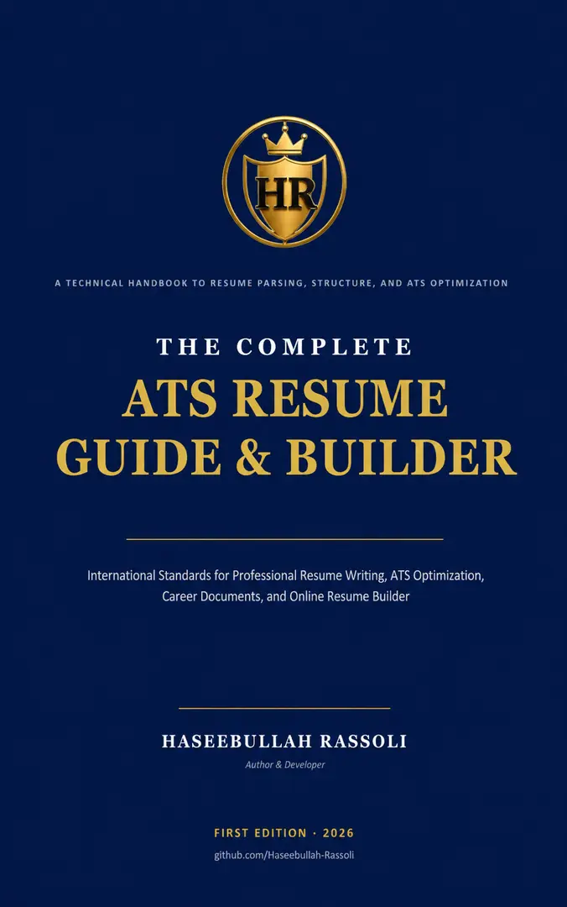
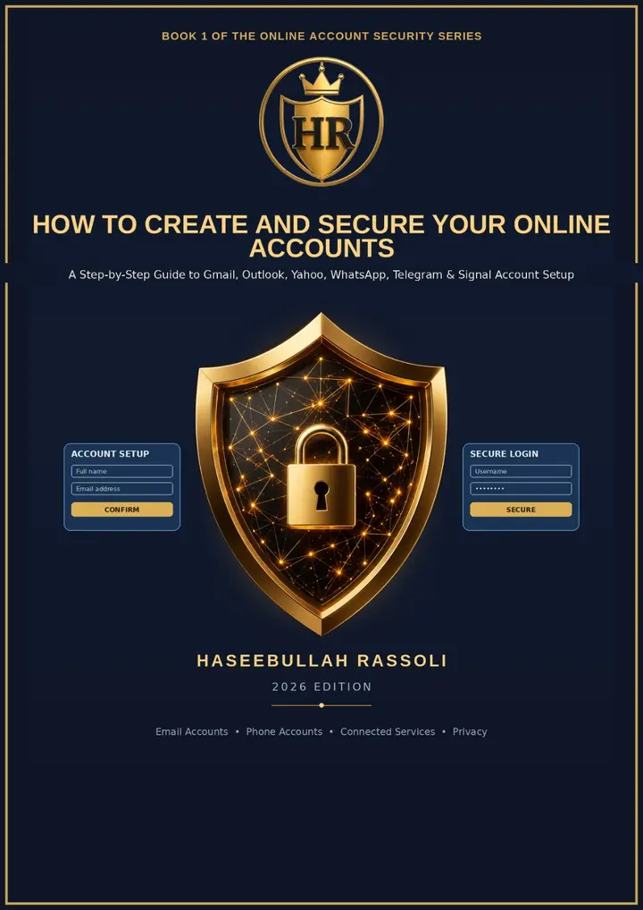
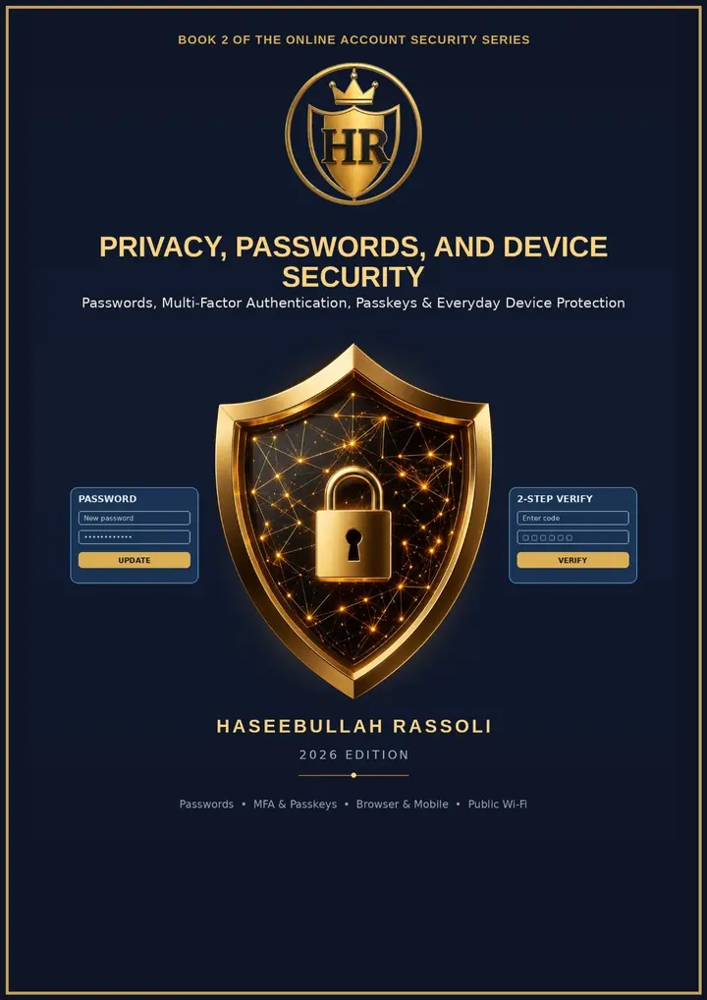

The Complete ATS Resume Guide & Builder
Resume writing, ATS preparation and career applications.
View on Amazon →PUBLICATIONS • PRACTICAL TOOLS
Explore original publications and free browser-based resume builders. Find a book to read or choose a resume tool that fits your experience.
These book links lead to Amazon product pages.

Resume writing, ATS preparation and career applications.
View on Amazon →
Practical steps for safer online accounts.
View on Amazon →
Privacy, passwords and protecting your digital devices.
View on Amazon →Start with VitaPath for resumes, CVs, scholarship applications and letters. Our earlier resume tools remain available below.
Choose from 8 CV and resume styles and 4 letter formats. Follow the writing guidance, see your changes in a live preview, and save your finished document as a PDF using Print / PDF.
Create and download without an account. Account creation and sign-in may have temporary issues while improvements are in progress.
For students and entry-level applicants.
Open live tool →Organize work history, experience and skills.
Open live tool →Present leadership achievements and professional experience.
Open live tool →Free practical guidance is available in the Cybersecurity section. Use the account-protection and suspicious-message checklists before taking your next step.
Browse cybersecurity guidance →